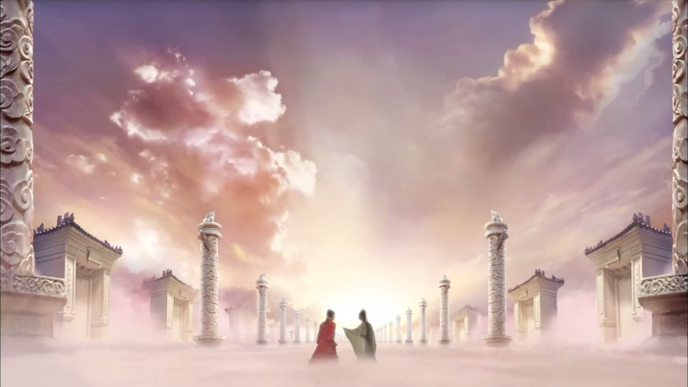
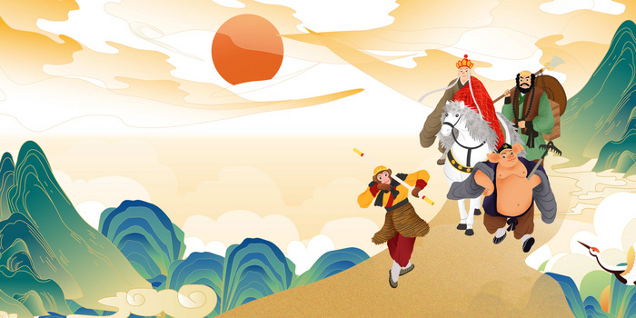

《红楼梦》
《红楼梦》，中国古代章回体长篇小说，中国古典四大名著之一，通行本共120回，一般认为前80回是清代作家曹雪芹所著，后40回作者为无名氏，整理者为程伟元、高鹗。小说以贾、史、王、薛四大家族的兴衰为背景，以富贵公子贾宝玉为视角，以贾宝玉与林黛玉、薛宝钗的爱情婚姻悲剧为主线，描绘了一些举止见识出于须眉之上的闺阁佳人的人生百态，展现了真正的人性美和悲剧美，可以说是一部从各个角度展现女性美以及中国古代社会世态百相的史诗性著作。

《西游记》
全书主要描写了孙悟空出世及大闹天宫后，遇见了唐僧、猪八戒、沙僧和白龙马，西行取经，一路上历经艰险，降妖除魔，经历了九九八十一难，终于到达西天见到如来佛祖，最终五圣成真的故事。该小说以“玄奘取经”这一历史事件为蓝本，经作者的艺术加工，深刻地描绘出明代百姓的社会生活状况。
《三国演义》
《三国演义》可大致分为黄巾起义、董卓之乱、群雄逐鹿、三国鼎立、三国归晋五大部分，描写了从东汉末年到西晋初年之间近百年的历史风云，以描写战争为主，诉说了东汉末年的群雄割据混战和魏、蜀、吴三国之间的政治和军事斗争，最终司马炎一统三国，建立晋朝的故事。反映了三国时代各类社会斗争与矛盾的转化，并概括了这一时代的历史巨变，塑造了一群叱咤风云的三国英雄人物。
